沐仞科技 · 色彩过渡研究 · 取样 2026-10-12 · 定稿版 2026-10-13
方法：取 2026-10-12 抓的首屏截图，对导航以下的首屏区域逐列、逐行求平均色，得到两条真实的过渡色带（左到右、上到下），并统计主导色。同时列出从页面 CSS 里抓到的渐变声明。第三节是沐仞定稿方案「晨昏蓝」的过渡配方，色值与原型、规范页逐一对应。
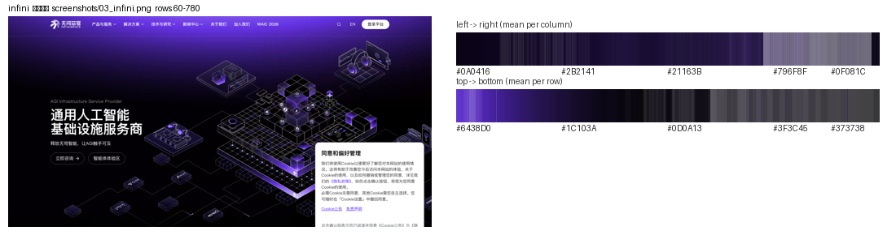
上到下：#6438D0 → #1C103A → #0D0A13。紫色不是一块色，而是从插画中心向外发光、逐渐没入黑色；左右方向也在 #0A0416 与 #796F8F 之间来回，说明光源在画面中部偏右。CSS 里没有渐变声明，过渡全在图片里。
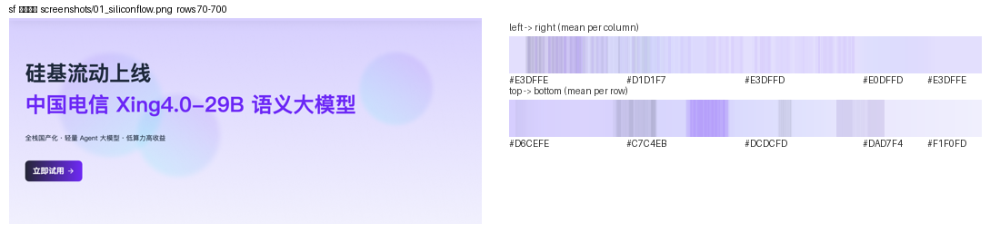
上到下：#D6CEFE → #C7C4EB → #DCDCFD → #F1F0FD，顶部最紫、底部接近白；横向在 #E3DFFE 附近几乎不变。画面里另有两三个大尺寸模糊紫色圆斑。CSS 抓到：linear-gradient(to right, rgb(37,39,54), rgb(110,41,245))（深色卡片用）。
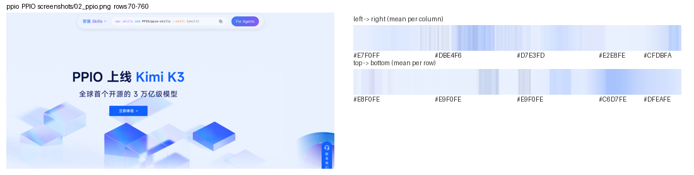
上到下 #E8F0FE → #C6D7FE → #DFEAFE：中下部最蓝（玻璃方块所在），四边回到接近白。CSS 抓到四条渐变，主标题与按钮用 linear-gradient(120deg, #3B82F6, #6366F1 50%, #8B5CF6)，底部用 linear-gradient(rgba(255,255,255,0), #fff) 把插画淡出到白。
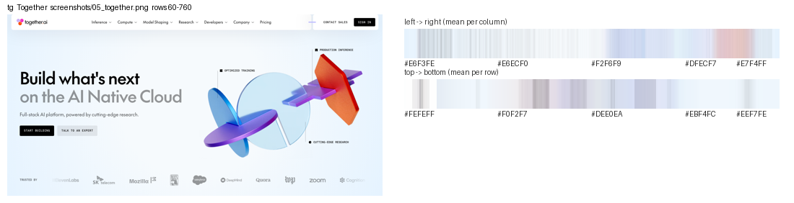
CSS 抓到：radial-gradient(circle, #F6FAFD 35%, #E5F3FF) 与 linear-gradient(#fff 15.93%, #F6FAFD 26.07%, #E5F3FF 73.05%)。像素取样证实背景只在 #FEFEFF 到 #DEE0EA 之间变化，所有饱和色都在 3D 物体上（蓝 → 紫 → 橙的多段渐变）。
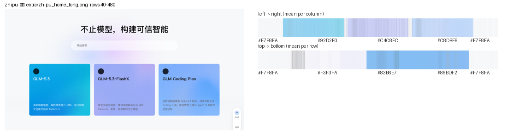
左到右 #F7F8FA → #92D2F0 → #C4C8EC → #C8DBF8 → #F7F8FA：三张卡片各自是一组双色渐变（青 → 蓝、淡紫 → 蓝、蓝 → 淡蓝），卡片之外全是白。搜索框后面另有一层低饱和的青紫色斑。
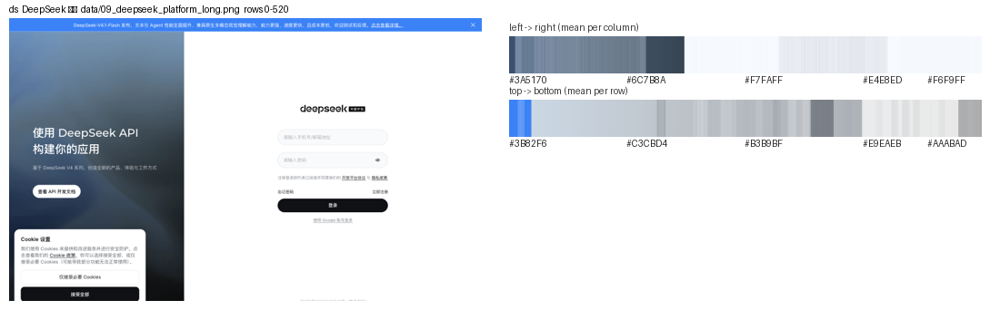
CSS 抓到左栏：linear-gradient(#7594B7 0%, #4F6375 31%, #2D3B4D 56%, #121519 100%) 叠在一张照片上，四段色标把蓝灰慢慢压到黑；右栏纯白。
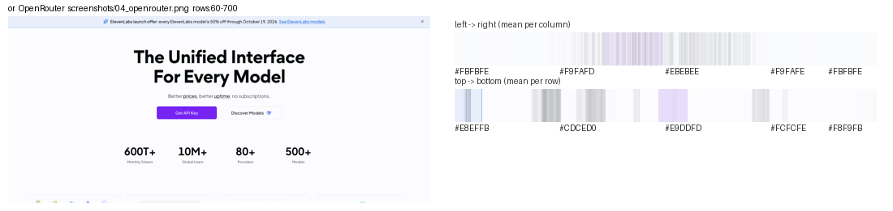
像素几乎全在 #F8F9FB 到 #FCFCFE，紫色只出现在按钮。CSS 抓到两条用于把背景网格淡出的渐变：linear-gradient(to top in oklab, #FCFCFE 0%, transparent 50%, #FCFCFE 100%)。
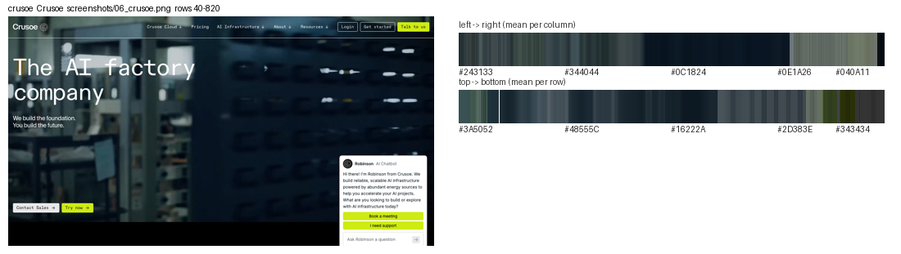
三家都是照片打底，再用 linear-gradient(rgba(0,0,0,0), rgba(0,0,0,.5))（Crusoe）或 rgba(0,0,0,.28) → .37 → .8（Emerald）从上到下压暗，让白字落在暗部。色带因此是从深灰绿或深棕慢慢变黑，而不是纯色块。
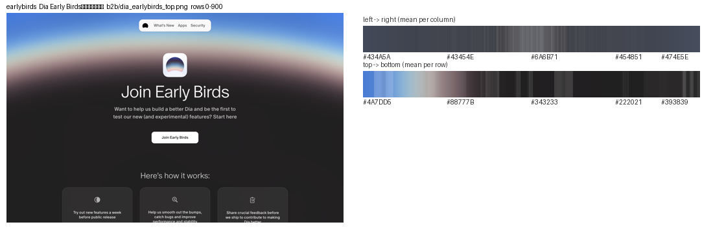
上到下 #4A7DD5 → #88777B → #343233 → #222021：天空蓝在最上，经一道很窄的霞色（藕灰）落到炭黑，下半屏全是黑，白字落在黑区。左右方向几乎不变（#434A5A ↔ #474E5E），说明它不是平行色带，而是一条以画面下方为圆心的弧：炭黑在圆内、霞光沿弧的外缘、天空在最外。主导色 59% 是炭黑 #242424，天空蓝只占 5%。沐仞的晨昏蓝就是从这页取的四个锚点（天空 #5284D7、霞 #B7A8A3、暮 #3D314F、炭 #212021），几何上也照抄了"大半径径向渐变"，只是把弧顶抬高、把霞光带加宽。
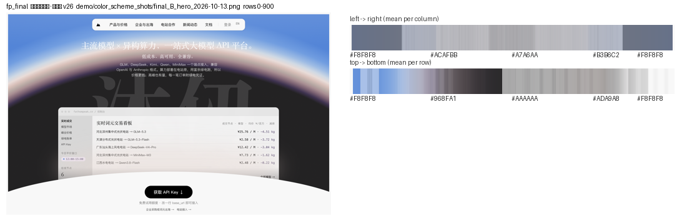
上到下：顶端天空蓝，四分之一处 #968FA1（霞与暮之间），中段 #AAAAAA（半透明磨砂的产品窗压在黑区上），底部白弧回到纸白 #F8F8F8。左右方向 #F8F8F8 → #ACAFBB → #A7A6AA → #B3B6C2 → #F8F8F8，两侧比中间亮是因为白弧在两侧更高。主导色：纸白 27%、炭黑 22%、浅灰 12%、天空蓝 8%。和 Early Birds 相比，沐仞的霞光带更宽（约 130px 对 Dia 的约 60px）、弧顶更高（235px），黑区比例更小，整体更接近"白底 + 一道晨昏"而不是"黑底"。无头走查对首屏下方的留白区逐列测色差：相邻列 ΔE 最大 0.84、左侧通栏逐行最大 1.22，没有可见硬边。
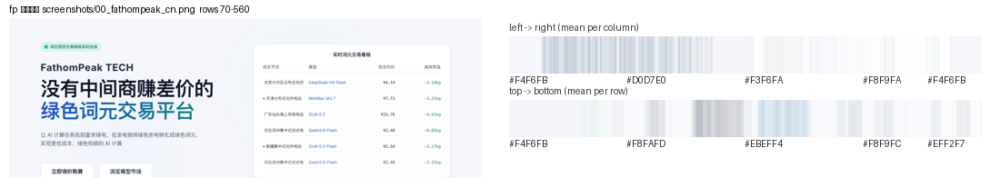
背景几乎纯白（#FCFCFC 占 91%），唯一的过渡是标题文字 linear-gradient(135deg, #1D4ED8, #059669)。问题不在"有没有渐变"，而在蓝和绿两端都是别家的颜色。
| 技法 | 谁在用 | 做法 |
|---|---|---|
| 弧形地平线（大半径径向渐变） | Dia Early Birds → 沐仞定稿 | 圆心放在首屏下方约一个屏宽处，圆内是炭黑，沿圆的外缘依次排暮紫、霞、近白、淡蓝，最外是天空蓝；白字落在黑区，底部再用一道白弧接回纸面。形状和颜色同样重要：是弧，不是平行色带。 |
| 大尺寸径向光斑 / 色雾 | 硅基流动、PPIO、智谱、Together、沐仞内页 | 在白或极浅底上放 1–4 个直径 400–900px、边缘完全透明的品牌色光斑，不同色相的光斑分开放，中间留白，不让它们直接相混；沐仞企业页在此基础上整体模糊 18px 并向下淡出。 |
| 竖向线性渐变 | 硅基流动、DeepSeek、Together | 顶部带色、往下回到白（或往下压到黑），3–4 个色标，中间色标偏向浅色端，避免中段发灰。 |
| 渐变文字 | PPIO、沐仞现网（改版前） | 只用于标题或强调词，两端取同一色相的深浅，或相邻色相；对比度按最浅一端算。定稿里首屏标题是纯白反白，不再用渐变文字。 |
| 双色渐变卡片 | 智谱 | 相邻色相（青 → 蓝、蓝 → 紫）做 120° 线性渐变，卡片之间靠白色间隔。 |
| 淡出遮罩 | PPIO、OpenRouter、沐仞定稿 | 用 透明 → 白 的线性渐变把插画或网格融进页面底色，消除硬边；沐仞的产品窗底部与色雾底部都用这一招。 |
| 照片压暗 | Crusoe、Emerald、Soluna、DeepSeek | 实拍上叠 透明 → 半透明黑 的渐变，文字落在暗部。 |
| 发光没入黑 | 无问芯穹 | 深色底，品牌色从画面主体向外发光，向四周逐渐没入黑色。 |
共同点：没有一家把两个饱和色直接贴在一起。要么同一色相走深浅，要么相邻色相（蓝 ↔ 紫、青 ↔ 蓝）做渐变，要么用白或黑当中间层。互补色只以分开的光斑出现，不做线性混合，因为中段会变成灰。晨昏蓝的地平线之所以能把蓝和暖霞放在一起，是因为中间隔了一层"藕灰 → 暮紫 → 炭"的低饱和过渡，蓝与霞从不直接相接。
定稿只有一个强调色（晨蓝 #2F63B8 / 填充 #5284D7），暮紫 #4E3F66 只做"峰时 / 窗口 / 减排"状态色，不做装饰、不与蓝做线性混合。所有过渡只有三条：首屏的地平线，内页的色雾，以及组件里的填充蓝 → 白。下面的色值与 demo/沐仞品牌色卡与字体_晨昏蓝_2026-10-12.html 和原型 v26 的 27 个 token 一致。
十二个色标分布在 0 → 230px 的弧外缘上（炭黑占到 100vw 处，之后 16 / 34 / 52 / 66 / 84 / 100 / 118 / 142 / 175 / 230px），霞光带约 130px；最外一段 #5284D7 → #4A7CD3 拉到 700px 让天空微微变深。四个锚点 token：--hz-3 炭、--hz-2b 暮、--hz-2 霞、--hz-1 天空；弧上另有一团霞光 --hz-haze #E8D4CC（模糊 36px、透明度 .9）。
规范页的几个浅色 token 都落在这条带上：雾 1 #A9C3E8（离带 ΔE 1.4）、晨蓝软 #DCE7F7（1.0）、雾 2 #E3ECF8（1.2）、晨蓝淡 #EEF3FB（3.6）。所以蓝色系的浅色之间可以任意衔接，不会出现第二种蓝。
雾 3 霞粉与雾 4 淡紫是地平线霞色与暮色提亮后的版本（与 #B7A8A3、#3D314F 同色相），所以内页和首屏是同一套"晨昏"；它们与雾 1 浅蓝不相接，中间隔着纸白或雾 2。
/* 首屏地平线（原型 v26 实际代码；圆心在首屏下方 100vw + 235px 处） */
.hero .field{background:radial-gradient(circle at 50% calc(235px + 100vw),
var(--hz-3) 0, var(--hz-3) calc(100vw - 1px), var(--hz-2b) calc(100vw + 16px), #7A6071 calc(100vw + 34px),
#A88E92 calc(100vw + 52px), var(--hz-2) calc(100vw + 66px), #D9C0B9 calc(100vw + 84px), #E9DCD8 calc(100vw + 100px),
#CFD9E4 calc(100vw + 118px), #9DBBE4 calc(100vw + 142px), #6F9CE0 calc(100vw + 175px), var(--hz-1) calc(100vw + 230px), #4A7CD3 calc(100vw + 700px))}
/* 手机端：半径 140vw，弧顶 150px，各色标间距按 0.75 缩 */
/* 内页色雾：四团雾分开放，整体模糊 18px，40% 以下线性淡出到纸白 */
.fog{background:radial-gradient(60% 55% at 20% 20%,var(--field-1),transparent 70%),
radial-gradient(50% 50% at 80% 25%,var(--field-3),transparent 70%),
radial-gradient(45% 45% at 55% 70%,var(--field-4),transparent 72%),
radial-gradient(70% 60% at 50% 100%,var(--field-2),transparent 70%);
filter:blur(18px);opacity:.9;mask-image:linear-gradient(#000 40%,transparent)}
/* 产品窗：半透明磨砂，底部 58% 处开始渐隐；区块之间用 纸白 → 晨蓝淡 的线性渐变，不用硬边 */
.window{background:rgba(255,255,255,.82);backdrop-filter:blur(22px);mask-image:linear-gradient(#000 58%,transparent)}
.section-alt{background:linear-gradient(180deg,#F8F8F8 0%,#EEF3FB 100%)}
/* 按钮不参与色彩过渡：纯黑胶囊，悬停 #424242，不抬升不加影 */
对比度（WCAG 2.1，规范页实算）：晨蓝文字 #2F63B8 在纸白 5.84（AA）、在晨蓝淡上 5.24；白字在填充蓝 #5284D7 上 3.72，只做大字与图形；暮紫 #4E3F66 在暮紫软上 7.57；首屏白字在炭上 16.24；墨 70% 在纸白 8.34；墨 50% 3.93，只做 11px 辅助标签。所有色雾与地平线中段颜色都不承载文字。全站只有浅色主题，系统深色模式下也保持白底。